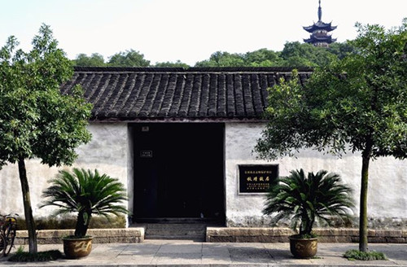

首页
简介
景点
美食
注册
登录
个人简介
天姥山
天姥山，位于绍兴市新昌县，景色宜人，是难得的旅游好去处。志载："派自括苍至关岭界层峦叠嶂，苍然天表，千姿万壮，为一邑主山"。
天姥横天 “天姥连天向天横，势拔五岳掩赤城，天台四万八千丈，对此欲倒东南倾。
”李白这首名诗歌颂了天姥山的横空气势。使得天姥山成为历史风景文化名山。
春风十里小镇
祥生春风十里小镇位于诸暨市东和乡十里坪，在一片绵延十余华里的独立丘陵之巅，
山顶地势平坦，视野开阔，地理位置独特。环绕重峦叠嶂，绿荫葱翠云遮雾飘绕，近赏遍野茶田彩蝶纷飞
。至今还保持着的传统农耕自给自足的原生态环境，让来访者充分感受到江南的乡风、乡情、乡味。
鲁镇
鲁镇景区是传统旅游景区和现代主题公园理念相结合的产物。根据鲁迅作品中多次出现的“鲁镇”这个典型环境，
鲁镇景区将《阿Q正传》、《祝福》、《狂人日记》等鲁迅作品和绍兴的传统文化相结合
。
柯岩风景区
景区根据鲁迅笔下小镇开发了鲁镇景区
，再现了旧时绍兴的风情文化、戏曲文化、节庆风俗等内容，与以上三处景区共同构成了“大柯岩景区”。

秋瑾故居
秋瑾故居位于绍兴市区塔山南麓和畅堂。秋瑾少女时代在这里习文练武。1906年春自日本归国后至1907年7月被捕前，一直在这里从事革命活动。
屋宇分五进，坐北朝南，依山而筑，门门楣之上，悬挂一方匾额，曰：“秋瑾故居”
.
新昌大佛寺
大佛寺的辉煌历史与在佛学发展中的地位，旅游者可以通过专门书籍与导游人员的口述中获知，而
大佛寺的造像艺术，建筑与环境的和谐是任何文字与语言难以完全表述的，只有当你身临其境时，才能体会其中之奥妙
。
1
2
下一页